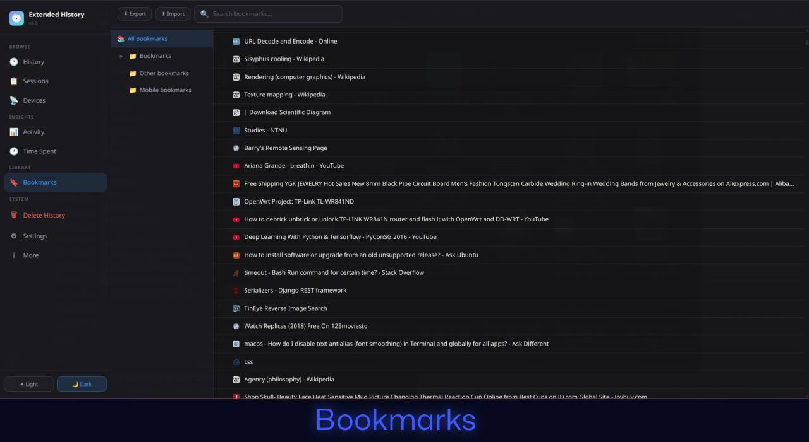

1 / 8
Extended History replaces Chrome's default history with unlimited retention (more then 90 days), advanced time tracking, session management, and powerful filtering capabilities.
Filter your history by date, URL, and title with lightning-fast search. Find exactly what you're looking for in seconds.
See exactly how much time you spend on each website. Track your daily activity and understand your browsing habits.
Monitor total page loads per website and visualize your browsing patterns with detailed statistics.
Export your history and bookmarks as JSON. Import data from other browsers or backup your browsing data.
Save and restore browser sessions. View previous sessions and export them as HTML files for safekeeping.
Press the extension button for instant access to recent history. No need to dig through menus.
Choose between dark and light modes. Customize accent colors to match your style.
Delete history by day, based on filters, or by selection. Clear cookies and cache alongside history entries.
Keep your history for more than 90 days. Configure retention from 30 days to 10 years (3650 days).
Automatically save your current session as an HTML file at regular intervals. Never lose your tabs again.
View browsing history from other devices synced with your Chrome account (if Chrome Sync is enabled).
All data stays on your device. No cloud sync, no external servers, no tracking. Your history is yours alone.
Protect your exported history with encryption. Even if your backup file falls into the wrong hands, your data stays secure with password protection.
Save and manage groups of tabs for later. Right-click "Tab Storage" in the popup to instantly see all your currently active tabs.
Browse and read your exported history directly — no need to import it first. Works seamlessly even with encrypted history files.
Search your history right from the popup. Instantly access recent history, recent tabs, and stored tabs — all without opening a new tab.
Exclude specific sites from being saved in your history. Add them instantly via right-click context menu, or manage them manually in settings.
Right-click "Recent History" in the popup to switch to "Most Visited" — see your top sites from the last 10 days at a glance.

All your browsing history, time tracking data, and sessions are stored locally on your device using Chrome's local storage API. Nothing is sent to external servers.
We don't collect, track, or transmit any of your browsing data. The extension has no analytics, no telemetry, and no third-party scripts.
All Chrome permissions are used exclusively for the extension's core functionality: reading history, tracking time, managing bookmarks, and saving sessions.
You maintain full control. Export all your data at any time as a JSON file. Delete everything with a single click whenever you want.
Extended History is open source software. You can review the entire codebase, verify our privacy claims, and even contribute improvements to the project.
View on GitHub →We're constantly working to improve Extended History. Here's what's coming next:
Optional productivity notifications to alert you about time spent on certain sites, helping you maintain healthy browsing habits and stay focused on what matters.
Have a feature suggestion or want to contribute?
Yes, Extended History is completely free to use with no premium tiers or hidden costs.
Chrome's default history only keeps 90 days of data and lacks advanced features. Extended History offers unlimited retention, time tracking, session management, detailed statistics, and much more powerful search and filtering capabilities.
All your data is stored locally on your device using Chrome's local storage API. Nothing is sent to external servers or the cloud. You maintain complete control over your data.
Yes! You can export your entire history, bookmarks, time tracking data, and sessions as a JSON file. You can also import this data back later or use it for backup purposes.
Extended History is designed for Google Chrome but may work with other Chromium-based browsers like Microsoft Edge, Brave, or Vivaldi. However, full compatibility is not guaranteed.
No. Extended History uses efficient event-driven tracking and minimal background processes. It's designed to have negligible impact on browser performance.
Extended History replaces the default history page (chrome://history) but doesn't delete your existing Chrome history. It maintains both its own enhanced database and continues to sync with Chrome's native history system.